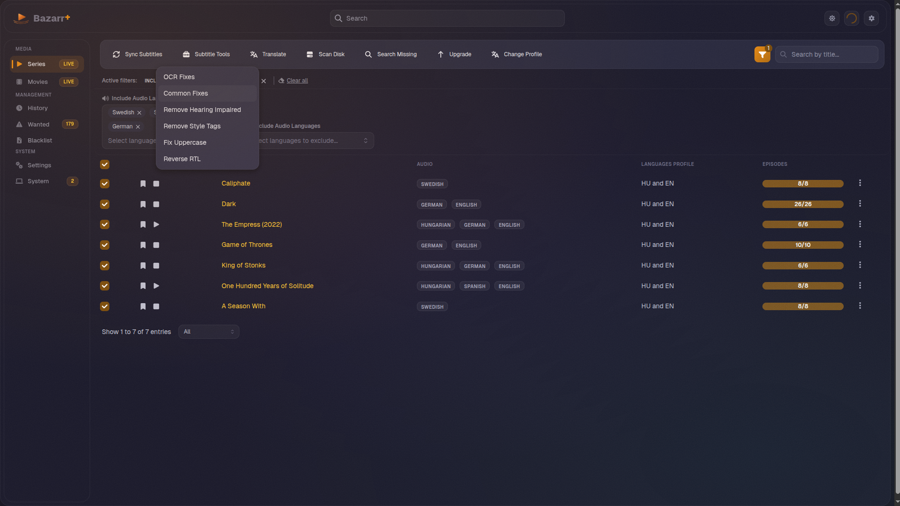
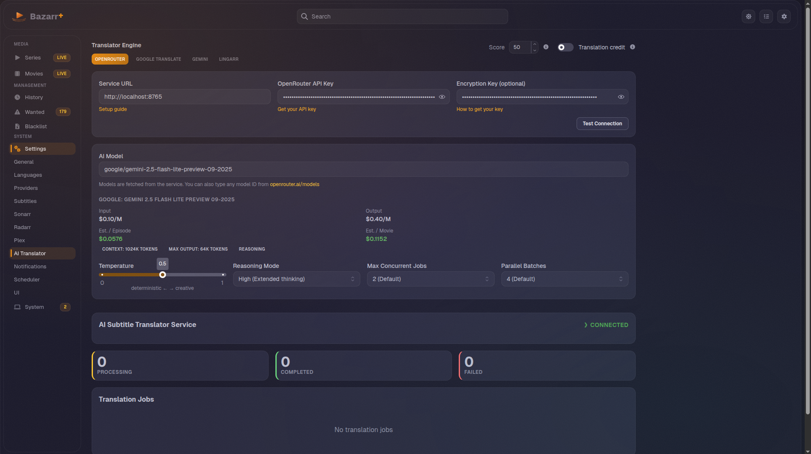

Comparison
Bazarr+ vs Upstream Bazarr
Features requested for years, ignored or rejected upstream. Bazarr+ ships them all.
| Feature | Upstream Bazarr | Bazarr+ |
|---|---|---|
| Provider Hub v2.3 | Marketplace for installable subtitle provider plugins with catalog sources, trust labels, staged restart activation, isolated workers, and activity log | |
| External Integration v2.2 | OpenSubtitles-compatible REST endpoint with first-party Jellyfin plugin and VLSub Bazarr+ | |
| Jellyfin Library Refresh v2.2 | Upstream development only |
Cherry-picked and polished: HTTPS with self-signed support, hardening, "Refresh now" card |
| API Key Encryption v2.2 | AES-encrypted at rest with auto-migration and key rotation | |
| Provider Priority | Requested (62 votes) | Priority order with early stop |
| OpenSubtitles.org | Self-hosted scraper | |
| AI Translation | Any OpenRouter model (free tiers available) | |
| Mass Sync | Requested (249 votes) | Bulk sync from Tasks page |
| Bulk Operations | One at a time | 11 batch actions (up to 10k items) |
| Subtitle Editor | Full editor with video, waveform, AI | |
| Telemetry | GA4 + UA to Google | Removed entirely |
| Password Security | MD5 | PBKDF2 (600k iterations) |
Screenshots
See it in action




Quick Start
Up and running in under a minute
One command to install everything, or copy the compose file below.
One-liner install
curl -fsSL https://lavx.github.io/bazarr/install.sh | bashWant to inspect first? View the script source.
docker-compose.yml
services:
bazarr:
image: ghcr.io/lavx/bazarr:latest
container_name: bazarr
restart: unless-stopped
depends_on:
opensubtitles-scraper:
condition: service_healthy
ports:
- 6767:6767
environment:
- PUID=1000
- PGID=1000
- TZ=UTC
- OPENSUBTITLES_SCRAPER_URL=http://opensubtitles-scraper:8000
volumes:
- ./config:/config
- /path/to/movies:/movies
- /path/to/tv:/tv
healthcheck:
test: ["CMD-SHELL", "curl -sf http://localhost:6767/_supervisor/status | grep -q '\"running\"'"]
interval: 30s
timeout: 10s
retries: 3
start_period: 30s
opensubtitles-scraper:
image: ghcr.io/lavx/opensubtitles-scraper:latest
container_name: opensubtitles-scraper
restart: unless-stopped
depends_on:
flaresolverr:
condition: service_healthy
ports:
- 8000:8000
environment:
- FLARESOLVERR_URL=http://flaresolverr:8191/v1
healthcheck:
test: ["CMD", "curl", "-sf", "http://localhost:8000/health"]
interval: 30s
timeout: 10s
retries: 3
start_period: 10s
# Handles Cloudflare challenges for the scraper
flaresolverr:
image: ghcr.io/flaresolverr/flaresolverr:latest
container_name: flaresolverr
restart: unless-stopped
environment:
- LOG_LEVEL=info
healthcheck:
test: ["CMD", "curl", "-sf", "http://localhost:8191/health"]
interval: 30s
timeout: 10s
retries: 3
start_period: 60s
# AI translation via OpenRouter (free tiers available)
# Configure the API key in Settings > AI Translator
ai-subtitle-translator:
image: ghcr.io/lavx/ai-subtitle-translator:latest
container_name: ai-subtitle-translator
restart: unless-stopped
ports:
- 8765:8765
healthcheck:
test: ["CMD", "curl", "-sf", "http://localhost:8765/health"]
interval: 30s
timeout: 10s
retries: 3
start_period: 10sFor environment variables, volume mappings, and Sonarr/Radarr setup, see the Getting Started guide.
Switching from upstream? Same database, same config. Back up your
config directory, swap the container image, and start. Settings, history, and provider accounts carry over.
FAQ
Common questions
Yes. Bazarr+ uses the same database with a few added columns created on first run. Your SQLite database, settings, download history, and subtitle files are all preserved. Back up your config directory first, swap the container image, and start.
Yes. Restore your config backup, change the image back, and start. The only manual step is clearing the password field in config.yaml since upstream cannot read the PBKDF2 hash. See the migration guide for details.
Completely free and open source under the same GPL license as upstream Bazarr. AI translation uses OpenRouter, which offers free model tiers with generous limits. Paid models are available if you want higher quality, but they are entirely optional.
No. Your Sonarr/Radarr connections, language profiles, provider accounts, and notification settings carry over as-is. New features like Provider Hub, provider priority, bulk operations, and the subtitle editor are available immediately. Installed Provider Hub plugins activate after the staged restart.
The scraper fetches publicly available subtitle pages from OpenSubtitles.org, similar to how a browser works. It uses FlareSolverr to handle Cloudflare challenges. No OpenSubtitles account or API key is needed.
Join our Discord server for help and discussion, or open an issue on GitHub. The guides section covers installation, AI translation setup, and migration in detail.